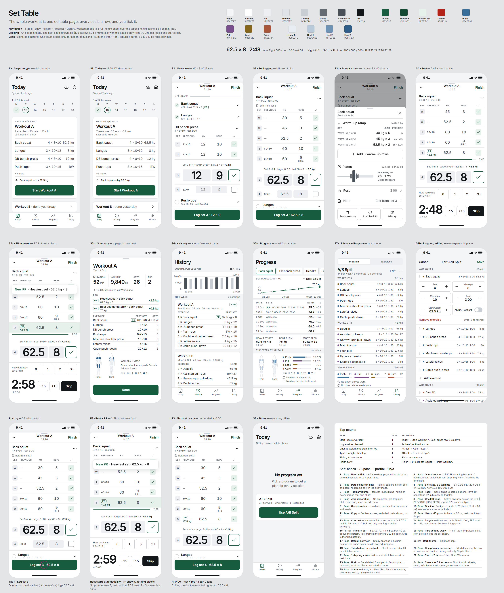
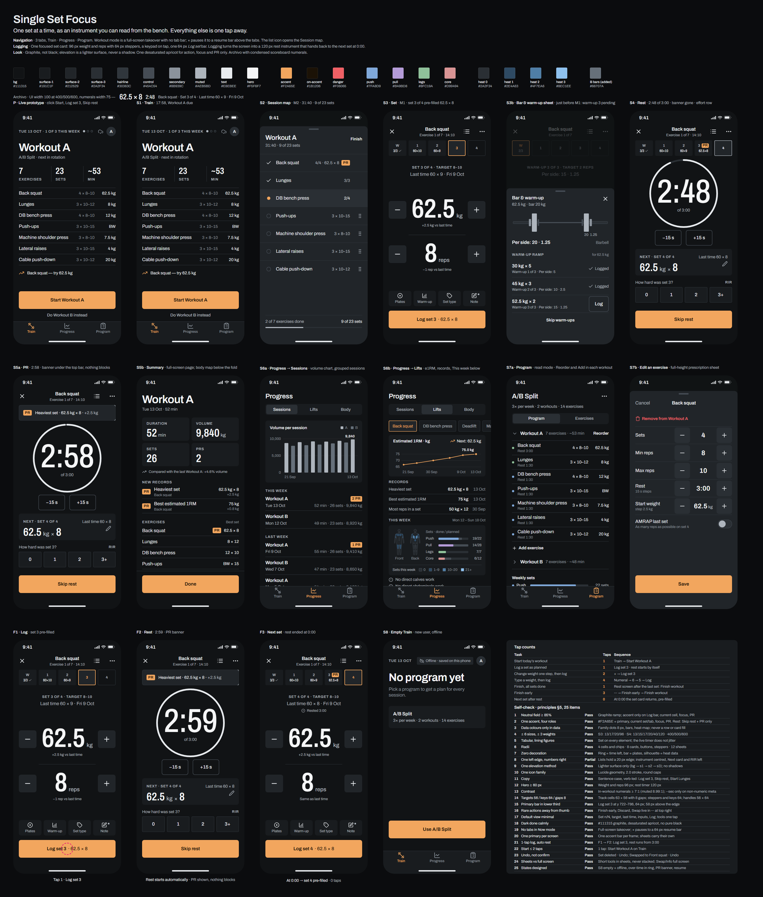
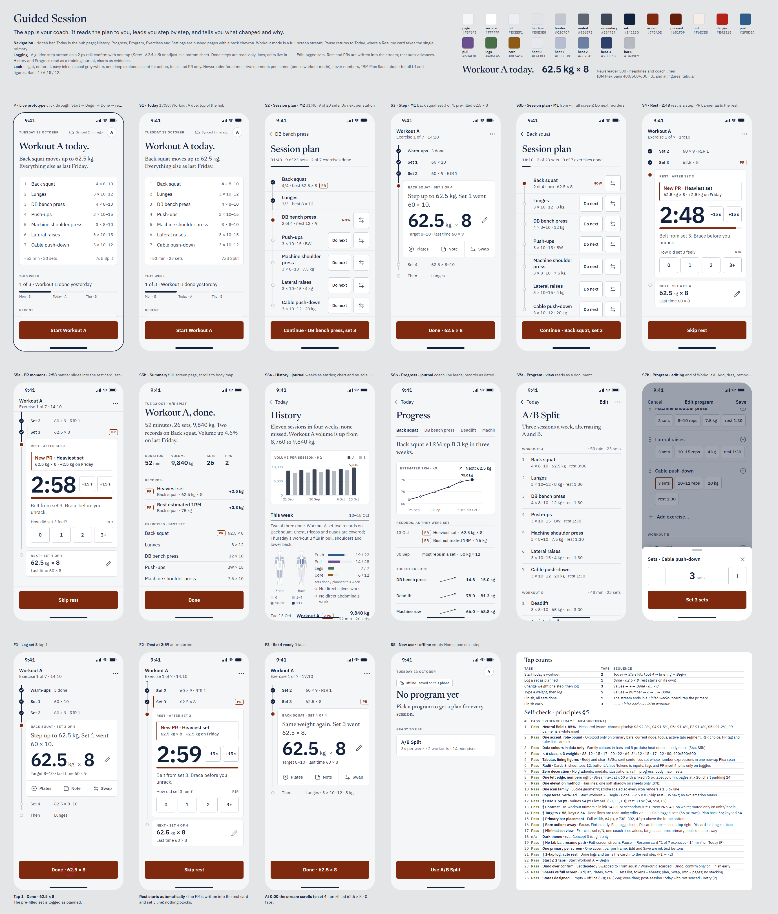
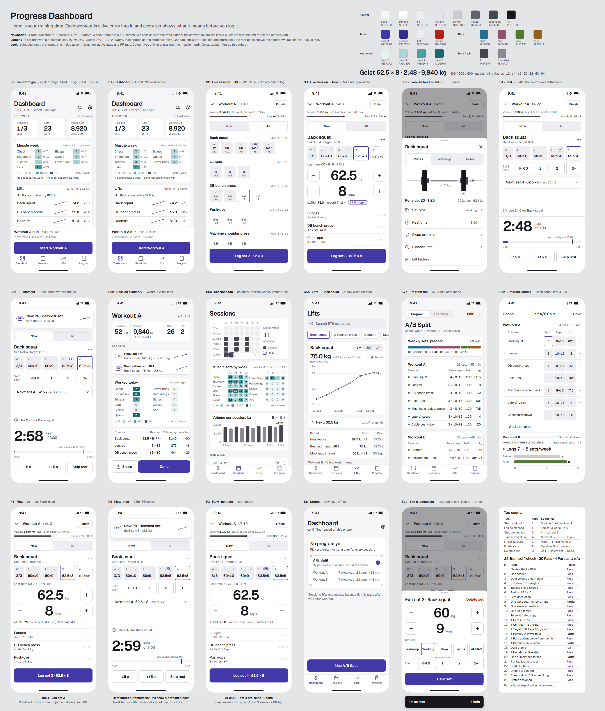

1 · Set Table
The whole workout is one editable page; every set is a row you tick.
- Navigation
- 4 tabs: Today · History · Progress · Library. The workout is a sheet that minimises to a bar.
- Logging
- Strong/Hevy-style table; the next set's row is enlarged. Log = 1 tap.
- Look
- Light, cool neutral, one court green. Inter / Inter Tight.
- Best for
- Familiarity, seeing the whole session at once.
- Review r1
- prof 8 · gym 7 · IA 8 · craft 7 · distinct 5

2 · Single Set Focus
One set at a time, as an instrument you can read from the bench.
- Navigation
- 3 tabs: Train · Progress · Program. The workout takes over the screen; pause leaves a resume bar.
- Logging
- One set card, 96 px numbers, ± steppers and keypad. Rest becomes a ring timer.
- Look
- Dark graphite, a muted apricot accent (calm, not neon). Archivo.
- Best for
- Mid-set legibility, focus, fewest decisions.
- Review r1
- prof 8 · gym 8 · IA 8 · craft 7 · distinct 9

3 · Guided Session
The app is your coach: it reads the plan to you and leads you step by step.
- Navigation
- No tab bar. Today is the hub; everything else opens from it.
- Logging
- A step stream on a rail. Tap "Done · 62.5 × 8", or adjust in a sheet. Rest is a step.
- Look
- Light, navy ink, one rust accent. Newsreader serif headlines, IBM Plex.
- Best for
- Following a program without thinking; explanations of what changed and why.
- Review r1
- prof 7 · gym 6 · IA 8 · craft 6 · distinct 8

4 · Progress Dashboard
Home is your training data; every set shows what it means before you log it.
- Navigation
- 4 tabs: Dashboard · Sessions · Lifts · Program. A live strip sits on every tab during a workout.
- Logging
- A grid with one cell per set, plus a projection line: "e1RM 75.0 · record 74.2 → PR if logged".
- Look
- Light, cool neutral, one indigo accent. Geist.
- Best for
- Progress-driven lifters; the richest stats.
- Review r1
- prof 8 · gym 6 · IA 7 · craft 7 · distinct 8